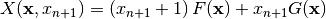
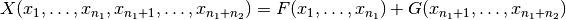
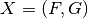
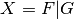

Summary¶
| Operations and constructions over VBF | |
|---|---|
| SYNTAX | DESCRIPTION |
long operator==(VBF& F, VBF& G) |
Returns 1 if F and G are equal |
void Comp(VBF& X, VBF& F, VBF& G) |
 |
void inv(VBF& X, VBF& A) |
 |
void sum(VBF& X, VBF& F, VBF& G) |
|
void directsum(VBF& X, VBF& F, VBF& G) |
|
void concat(VBF& X, VBF& F, VBF& G) |
 |
void concatpol(VBF& X, VBF& F, VBF& G) |
 |
void addimage(VBF& X, VBF& F, VBF& F) |
 |
void bricklayer(VBF& X, VBF& F, VBF& G) |
 |